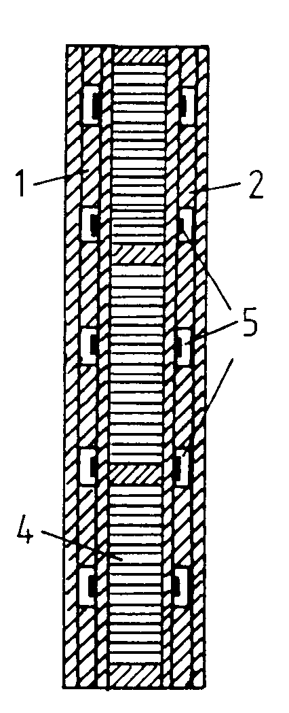

The following is a U.K. Patent granted to Harold Aspden on November 8th 1995 with a publication date of December 22 1993.
Abstract: Heat transfer apparatus, whether in panel or tubular form, comprises bimetallic all-ferromagnetic laminations (4). A temperature differential causes thermoelectric current circulation (in effect, a d.c. eddy-current) within each lamination which develops a magnetizing H-field. The ferromagnetic B-field enhancement develops in turn a circulating diamagnetic reaction current which traverses the bimetallic junction interfaces to generate Peltier action which causes an overriding thermal feedback and bistable direction-of-heat-flow operation. Control involves the priming action of an applied magnetic field or preheating by electrical resistors (5) in the heat sinks (1, 2). Application in a thermally powered electric transformer generator is described.
